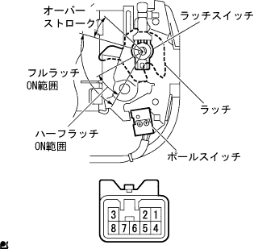
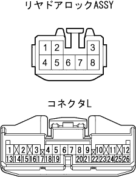

Power slide door code 1-3 is output |
| Step 1 | Power slide door lock ASSY No.1 LH single inspection |
|  |
Full latch switch conduct inspection
Use SST (Toyota Electrical Tester) to check the conversation between the connector terminals at each latch position.
| Measurement conditions | Terminal number | standard |
| Fullatch ON range | 3-5 | There is an conductor |
| Overstroke | 3-5 | Without conduction |
|
| ||||
| OK | |
| Step 2 | Wire harness inspection |
Conduction inspection
Separate the connector B of the door control relay and the power slide de arock ASSY No.1 LH connector.
|  |
Use SST (Toyota Electrica Altester) to check the conductor between the door control relay vehicle side connector L ← → Power Slide De -Dede Lock ASSY No.1 LH Vehicle side connector side terminals.
| Terminal number (relay ← → lock) | standard |
| L5 ← → 3 | There is an conductor |
|
| ||||
| OK | ||
| ||